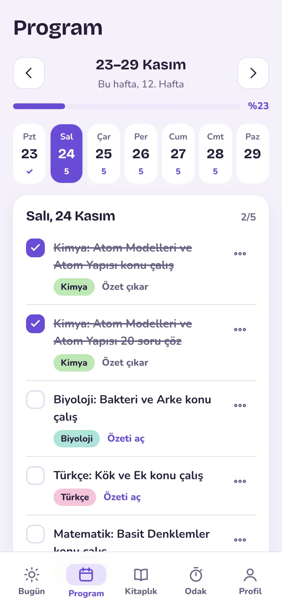
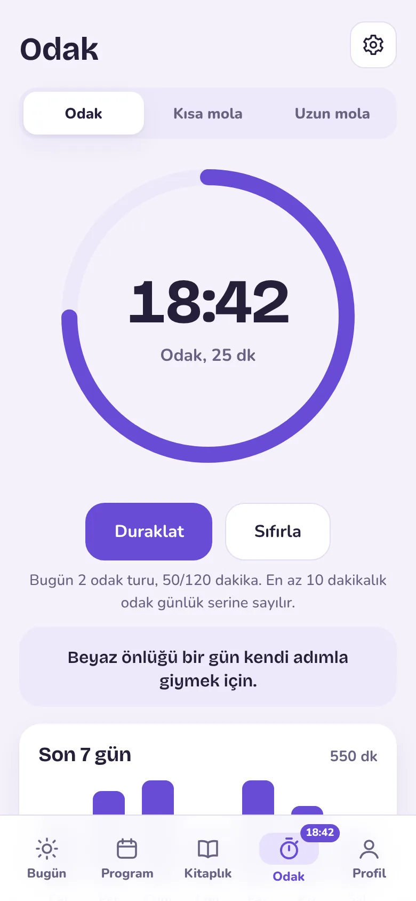
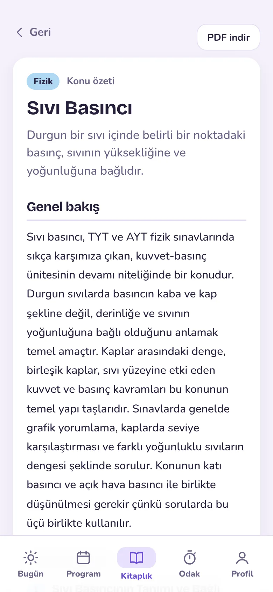
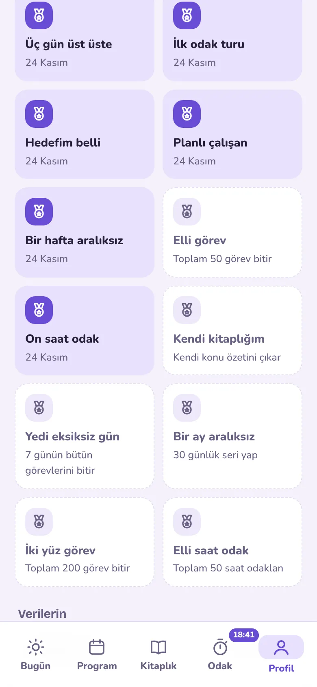

Dershane paneli
Hoca dershaneyi ve sınıfları kurar, öğrencilere 6 haneli sınıf kodunu verir. Excel programını ya da kendi yazdığı haftayı sınıfa veya tek öğrenciye gönderir, kimin ne kadar bitirdiğini görür.
Hocalar ve dershane yöneticileri için
Hocanın gönderdiği program kendiliğinden gelsin, konularını Mürek hatırlatsın, arkadaşlarınla aynı odada ortak sayaçla çalış. Ders Özetim her gün biraz daha ilerlediğini gösterir.
Uygulama gün boyu yanında. Sabah ne yapacağını, akşam ne kadar yaptığını gösterir.
Bugünkü görevlerin, YKS'ye kalan gün, serin ve şehrinin havasına göre küçük bir not. Hedef bölümün ve kendine yazdığın “neden çalışıyorum” notu da burada.
Koçunun gönderdiği Excel'i yükle; görevler günlere yerleşir ve konu özetleriyle eşleşir. Excel yoksa görevlerini kendin yaz ya da derslerini ve saatini seç, uygulama sana göre bir hafta planlasın.

25 dakika çalış, 5 dakika mola. Süreleri kendin ayarla, günlük odak hedefini koy. Bitirdiğin her tur günlük serine sayılır.

Görevin altındaki “Özeti aç” ile konu anlatımı, formüller, kavramlar, sık yapılan hatalar ve çözümlü sorular. Tek dokunuşla PDF olarak indir.

Günün bütün görevlerini bitirince kutlama, belli eşiklerde rozet. Yarın zinciri koparmamak için bir sebep daha.

Hoca programı bir kez yükler, sınıftaki herkesin telefonuna düşer. Öğrenciler aynı odada birlikte çalışır.
Hoca dershaneyi ve sınıfları kurar, öğrencilere 6 haneli sınıf kodunu verir. Excel programını ya da kendi yazdığı haftayı sınıfa veya tek öğrenciye gönderir, kimin ne kadar bitirdiğini görür.
Hocalar ve dershane yöneticileri için
Sınıf arkadaşlarınla ya da kodu verdiğin arkadaşlarınla aynı odada çalış: ortak odak sayacı, sohbet, istersen ses ve görüntü. Kamera ve mikrofon sen açana kadar kapalı.
Şikâyet et, sessize al, odadan çıkar
Mor mürekkep damlası maskotun. Her gün o günün konularını hatırlatır, konu özetlerinden soru sorar; yapay zekâ açıksa sorularını cevaplar.
Yapay zekâ olmadan da çalışır
Uygulama yapay zekâ olmadan da eksiksiz çalışır. Kişiye özel program ya da yeni bir konu özeti istersen üç ücretsiz yol var.
Model telefonunun ya da bilgisayarının kendi ekran kartında çalışır. Kurulum yok, kayıt yok. İlk seferde indirilir, sonra internetsiz de çalışır.
Chrome, Edge ya da iOS 26 ve sonrası Safari
Bilgisayarına ücretsiz Ollama kurduysan uygulama onun modellerini kullanır. Hiçbir veri bilgisayarından çıkmaz.
Windows, macOS, Linux
Uygulama hazır bir metin verir; ChatGPT, Gemini, Copilot ya da Claude'un ücretsiz sürümüne yapıştır, yanıtı geri yapıştır.
Her cihazda
Mağazadan indirmen gerekmez. Ana ekrana ekleyince kendi simgesiyle, tam ekran açılır.
Ders Özetim'in bütün kodu GitHub'da. Kendi bilgisayarında çalıştırabilir, geliştirebilir, eksik bir konunun özetini ekleyerek katkı verebilirsin.
AGPL-3.0 lisanslıdır: kodu değiştirip yayımlayan, kaynağını aynı lisansla paylaşır ve geliştiricinin adını korur.
Hayır. Ders Özetim tamamen ücretsiz ve reklamsızdır. Yapay zekâ özellikleri de ücretsiz yollarla çalışır.
Gün adlarının (Pazartesi, Salı…) bir satırda ya da bir sütunda yazdığı çoğu haftalık programı okur. Okuyamazsa görevlerini elle ekleyebilir ya da hızlı plan oluşturabilirsin.
Özetler konunun genel YKS kapsamına göre hazırlandı ve tekrar amaçlıdır; ders videolarının birebir özeti değildir. Önemli bilgileri ders kitabınla karşılaştır. Yapay zekâyla hazırladığın özetlerin altında bu ayrıca yazar.
Evet. Aynı hesapla girdiğin her cihazda programın, işaretlerin ve özetlerin aynıdır.
Bir hoca uygulamada Profil > Dershane paneli'nden dershaneyi ve sınıfları oluşturur. Her sınıfın bir kodu olur; öğrenciler bu kodla katılır. Hoca Excel programını yükleyince sınıftaki herkesin Program sayfasına düşer.
Dershane odalarına yalnızca o dershanenin öğrencileri, özel odalara yalnızca kodu bilenler girer. Kamera ve mikrofon kapalı başlar. Rahatsız eden kişiyi şikâyet edebilir, sessize alabilirsin; odayı açan kişi ve hocalar kişiyi odadan çıkarabilir.
Evet. Bir kez giriş yaptıktan sonra program, özetler, sayaç ve PDF internetsiz çalışır; bağlanınca eşitlenir. Odalar, hava durumu ve yapay zekâ indirmesi için internet gerekir.
Program, odak sayacı, seri ve plan özellikleri her sınav için çalışır. YDS kelime kartları yol haritasında.